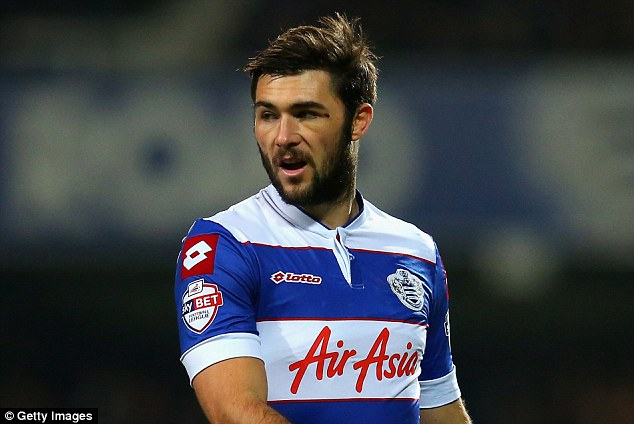

Rodgers is launching a cut-price £12million bid for Montenegro international forward Jovetic, who will be allowed to leave the Etihad this summer.(Liverpool Echo)
Liverpool are reportedly interested in signing Queens Park Rangers hitman Charlie Austin (Liverpool Echo)
Lacazette last night confirmed that he may leave Lyon this summer. Le 10 Sport are saying PSG and LFC remain interested. £28m (Jack Sear @JackSear)
Barcelona's Pedro is available for a cut-price of £7M. That Catalian club has put Chelsea, Arsenal, Tottenham and Liverpool on the hunt. (Matt Law, Daily Telegraph)
Juventus midfielder Arturo Vidal is “nearing” a transfer to Liverpool. The piece claims that the Reds have lodged a £14.4 million bid, but the Bianconeri are after £25 million. (Liam Corless, Daily Mirror)
Meanwhile, Liverpool have joined Bournemouth in showing interest in Everton left-back Luke Garbutt. (TalkSport)
Jerome Sinclair, the starlet is rumoured to be loaned out next season after making an immediate impact on his debut vs Chelsea
Raheem Sterling could be set to leave Liverpool, the 20-year-old talent will tell Brendan Rodgers that he does not want to stay at the club. (BBC)
Liverpool will announce winger Jordon Ibe, 19, has signed a new five-year contract at the club worth £35,000 a week (Sun)
Liverpool flop Mario Balotelli targeted by Sampdoria. (Mirror)
"Mario is a doubt. Apart from that most are fit," Rodgers said in his pre-match press conference.
I believe BR will be sacked in the coming weeks. He just hasn't done enough for the club. It looks like Jurgen Klopp is the odds on favourite for the job. Liverpool fans already are calling themselves 'Kloppites'. FSG however, look like they prefer De Boer. Obviously both have great connections with their fellow country players. Let's not count out Rafa coming back. He os an intrest for many seasons now. It'll be an interesting few weeks for Liverpool FC.
Mignolet deserved to win the golden glove. He looked certain to get it. The only problem is BR was so stressed he hasn't done anything good with the defence. It's like playing any sport, practice and training makes perfect. Clearly, a lack of defensive training has occured.